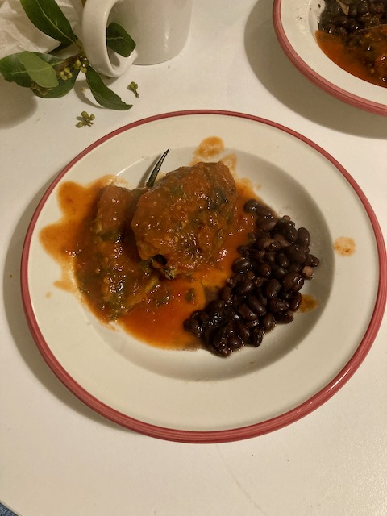

I'm Patrick Best, a multi-hypen-ate builder. I'm a Sigma, Tau, Upsilon. (and some other things)
I'm looking to build worlds, products, buildings, organisations, systems, teams, and futures. I'm open to any and all good ideas and projects. I'm not too hard to find and contact so please do.